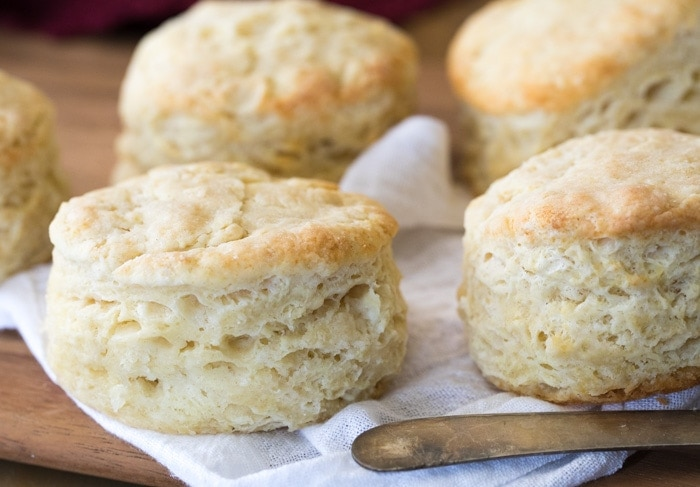

Homemade Biscuits

Description:
These biscuits are so deliciously soft and buttery. They are easy to make, easy to knead, and a nice, warm treat!
This recipe belongs to Sugar Spun Run. They're pretty good, but they're just biscuits.
Ingredients:
2 cups all-purpose flour
1 tbsp baking powder
1 tbsp granulated sugar
1 tsp salt
6 tbsp unsalted butter
0.75 whole milk
Steps:
- Chill your butter in the freezer for 10-20 minutes.
- Preheat oven to 425F and line a cookie sheet with parchment paper.
- Combine flour, baking powder, sugar, and salt. Mix well.
- Shred frozen butter into the flour mixture and stir.
- Add milk and stir until combined.
- Transfer the dough to a well-floured surface. Use your hands to work the dough together.
- Once the dough is cohesive, fold in half over itself and gently flatten.
- Rotate the dough 90 degrees and fold in half again. Repeat this step 5-6 times.
- Use your hands to gently flatten the dough to 1" thick. Lightly dust a biscuit cutter and make close cuts to get at least 6 biscuits.
- Bake for 12 minutes or until tops are beginning to turn lightly golden brown.
- If desired, brush with melted, salted butter after removing from the oven.